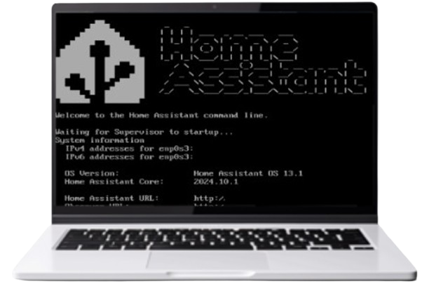

Final year Open to 2027 internships
Mario Salvador Camacho
Dual Computer Engineering and Business Administration at UC3M. A year in California, a year in Austria.
Things I have built
Three projects from the engineering side of the degree, in Madrid, San Diego and Graz.
Home Assistant platform
Smart-home control layer built with a five-person team at San Diego State University, unifying IoT devices behind one interface.

Macrolyze
Nutrition tracking web app where I worked as product owner, translating a messy backlog into shippable weekly increments.

Data science lab
Coursework taking real datasets from cleaning through modelling and evaluation, written up as reproducible notebooks.

The dual degree means I spend half my week on compilers and data structures and the other half on corporate finance and market strategy. The useful part is not either half on its own. It is that I can sit in a room where engineers and business people are talking past each other and follow both sides.
That gap is where I want to work. Product, strategy, operations, the roles where a technical decision and a commercial one turn out to be the same decision.
Two years of that were spent abroad. A full year at San Diego State University on a Santander scholarship, then a full year in Austria between TU Graz and Karl-Franzens, studying advanced computing alongside international business. Different countries, different teaching styles, a lot of group work with people who did not share my first language.
Outside that: golf, surfing, skiing and padel, plus guitar up to ABRSM grade 3. I also volunteer with Hogar Don Orione, Fundación Madrina and Fundación Aladina.